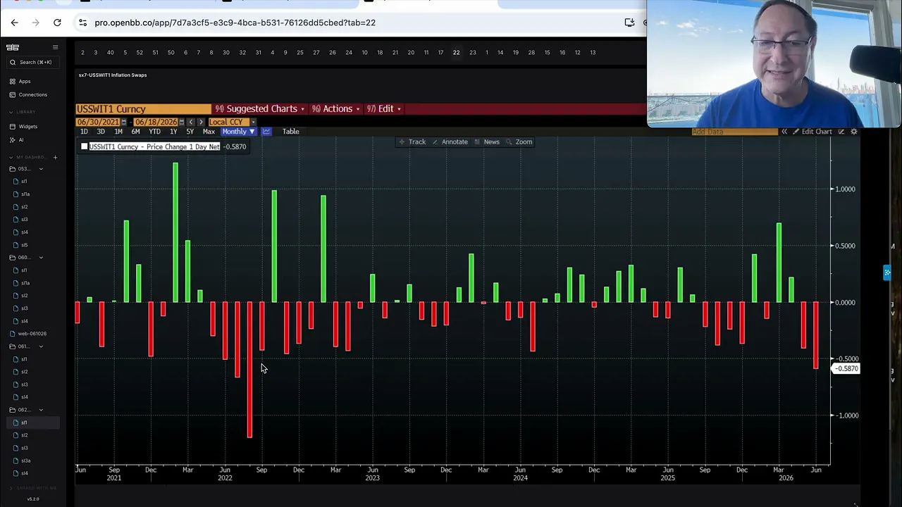
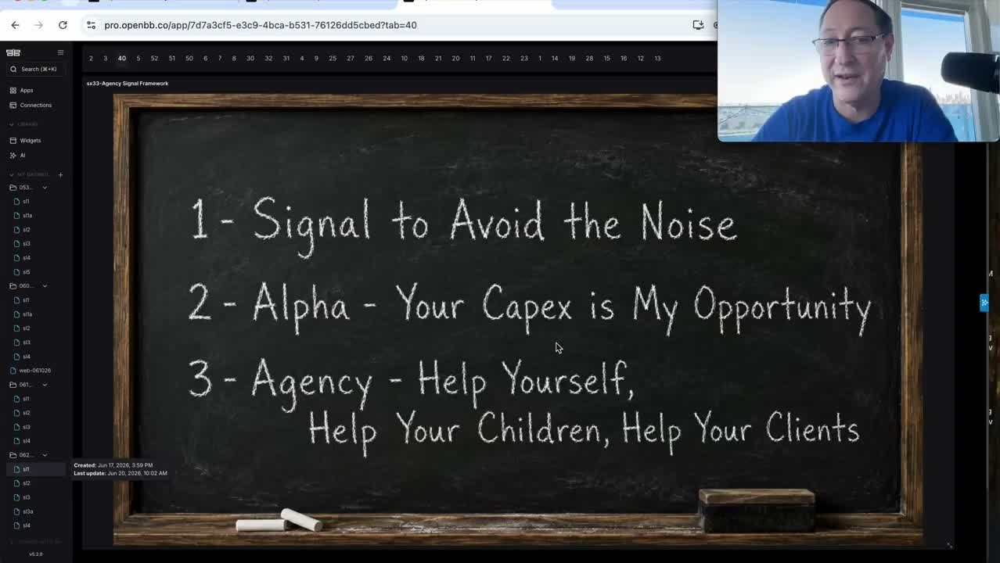
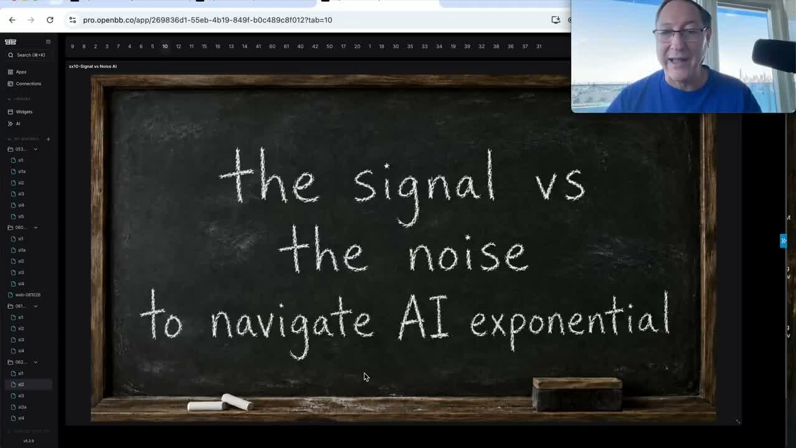
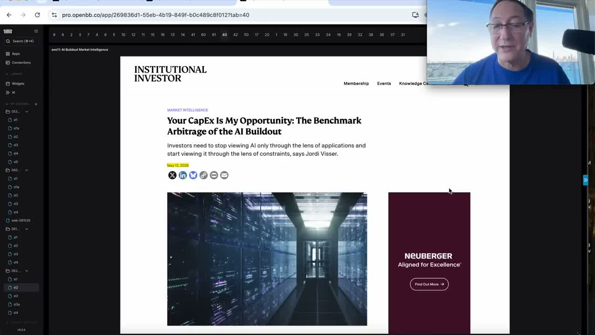
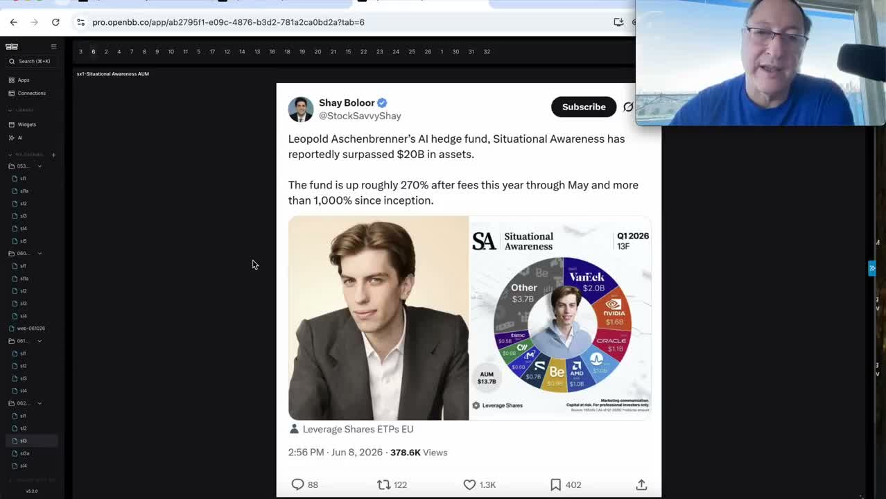
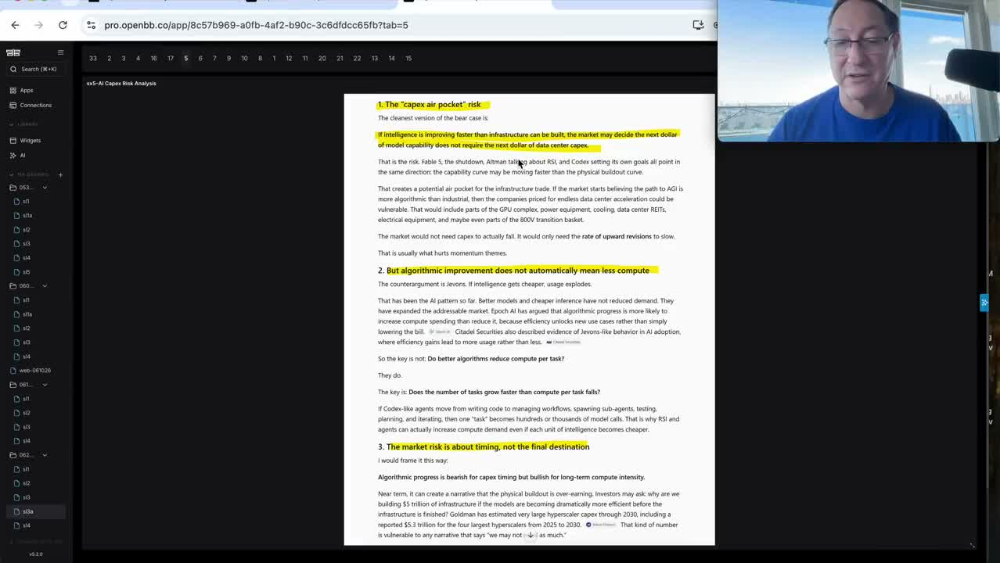

A60-Second Verdict
This is a high-value AI thesis update: keep following AI, but separate the physical-AI winners from hyperscaler capex and software losers.
- Core call: Jordi argues the current market is not an AI bubble unwind. He sees healthy consolidation, strong earnings, tight credit, and AI-led rotation beneath noisy macro headlines.
- Important new risk: recursive self-improvement and open-source model progress may make intelligence improve faster than new data centers can be built. That creates a capex air-pocket risk for hyperscalers.
- Investment meaning: the source supports long physical AI and semis versus software and possibly hyperscaler spenders, but it does not justify an immediate trade without current price, valuation, and portfolio checks.
- Action now: Q2 hyperscaler earnings/capex watch was created, the AI portfolio map split was accepted, the separate RSI/open-source monitor was rejected as unnecessary, and Bitcoin stays on hold until momentum improves.
Processor Decision
BSignal Scorecard
Maturity Sliders
CBasic Information
| Field | Value |
|---|---|
| Working title | Signal vs Noise During the Rise of AI |
| YouTube metadata title | Screen Recording 2026 06 20 at 10 01 14 AM |
| Author / channel | Jordi Visser |
| Provider context | 22V / Jordi Visser weekly video email provided by Rene dated 2026-06-21 |
| YouTube publish date | 2026-06-20 |
| Duration | 49:49 |
| Source UID | youtube:GXwjffE3gNk |
| Processed content | 22V portalmail redirect, YouTube metadata, automatic-caption transcript, Rene-provided provider summary and timestamps, thumbnail, and five sampled video frames. |
| Not processed | 22V subscriber-only web/PDF versions, paid source workbooks, live market data, current portfolio exposure, instrument valuation, and independent verification of all market-level claims. |
GXwjffE3gNk. Duplicate preflight found no processed Signal-to-Alpha source matching the portalmail URL, resolved YouTube URL, or youtube:GXwjffE3gNk.DContent Extraction
| Signal | Plain-English Explanation | Initial Route |
|---|---|---|
| Signal vs noise | Jordi argues that bubble talk, tariff fears, oil-doomer arguments, and hawkish Fed headlines have repeatedly distracted investors from the actual AI-led market signal. | Thesis context |
| Not a bubble | The source says the S&P 500 and small-cap PEG ratios are low relative to history, the index is only 8.66% above its 200-day moving average, and the market is consolidating rather than breaking. | Verify market data |
| Benchmark arbitrage | Many investors are overweight hyperscalers by index construction. If the spenders underperform and physical AI winners outperform, passive AI exposure can miss the alpha. | Portfolio-risk review |
| Long semis, short software | Micron is used as the positive semiconductor example, while Adobe and Salesforce are used as examples of software pressure from AI substitution. | Watchlist review |
| Hyperscaler capex risk | The source warns that Microsoft, Meta, Google, and Amazon are making huge capex bets while free cash flow, depreciation, model competition, and open-source pressure may change the return profile. | Q2 earnings watch |
| Recursive self-improvement | Recursive self-improvement means AI systems help improve later AI systems. If this works, intelligence can improve through algorithms before the next wave of data centers arrives. | AI market structure |
| Open source pressure | GLM 5.2, DeepSeek, and compound-model workflows are framed as evidence that cheaper or open-source models can pressure frontier-lab economics and hyperscaler demand assumptions. | Model-price monitor |
| Bitcoin momentum filter | Bitcoin remains below the 200-day moving average in the source framing. Jordi says no add until price breaks above that level. | Monitor only |
EContent Evaluation
| Dimension | Assessment | RAG |
|---|---|---|
| Plausibility | High. The core idea fits prior Jordi signals: AI is not one trade, hyperscaler spending can be a source of opportunity for physical-layer suppliers, and software can be disrupted by AI tools. | Green |
| Evidence strength | Medium-high. The video uses charts, market relationships, credit indicators, and named examples, but this run did not independently verify all current market levels. | Amber |
| Novelty | High. The new part is not "AI is strong." The new part is that recursive self-improvement and open-source progress may question the capex curve before all planned infrastructure is deployed. | Green |
| Decision readiness | Medium. It is ready for a dashboard priority, Q2 earnings checklist, and watchlist refinement. It is not ready for buy/sell language. | Amber |
| Main weakness | The source is assertive and sometimes mixes market facts, technical levels, model rumors, and broad strategic claims. Each action needs a separate evidence check. | Amber |
FInvestment Impact
| Area | Impact | Confirmation Score | Implication |
|---|---|---|---|
| AI Infrastructure | Supports the thesis that physical AI suppliers and semis can keep compounding while hyperscalers carry the spending burden. | 9/10 | Separate beneficiaries from spenders; do not treat AI exposure as one basket. |
| AI Market Structure | Strengthens the view that model efficiency, open source, compound models, and sovereign AI can alter who captures value. | 8/10 | Add model-price compression and open-source adoption to the AI monitoring layer. |
| Portfolio Risk | Raises a benchmark-arbitrage issue: passive index exposure can mean forced hyperscaler overweight even if the better alpha is elsewhere. | 8/10 | Review whether current exposure is accidentally long the spenders rather than the beneficiaries. |
| Software Risk | Reinforces the risk that AI-native tools pressure traditional software franchises such as Adobe and Salesforce. | 7/10 | Keep software disruption as a thesis-pressure item, not a standalone short without market checks. |
| Macro Rates And Labor | Frames hawkish Fed, inflation, oil, and recession stories as noise unless confirmed by rates, inflation swaps, credit spreads, and earnings revisions. | 6/10 | Use macro indicators as confirmation screens before changing equity stance. |
| Crypto / Bitcoin | Bitcoin is not an add while below the 200-day moving average in the source framing. | 5/10 | Keep BTC on the watchlist; no action without a fresh technical and allocation check. |
GConcrete Actions
Track MSFT, META, GOOGL, AMZN, ORCL capacity commitments, depreciation, capex guide changes, free cash flow, model traction, and comments on open-source or cheaper model substitution.
Rene agreed. Classify MU, MRVL, ENTG, ECL, ORCL, MSFT, META, ADBE, CRM, QQQ, and SPY by mechanism before any investment-idea promotion.
Rene marked this not required and will rely on 22V Research / Jordi to highlight this pressure layer.
Noted. The source says Bitcoin is below the 200-day moving average and lacks momentum. Do not convert this into a buy signal without a current chart check.
HDetailed Appendix For Understanding
This appendix explains the source in detail so Rene can often skip the full 49-minute video unless he wants the charts and Jordi's tone.
Video Evidence Pack






The video is about separating signal from noise, not ignoring risk.
Jordi's framing is that investors keep reacting to loud stories: bubbles, tariffs, oil spikes, recession calls, hawkish Fed headlines, and inflation scares. His point is not that risks never matter. His point is that risk claims should show up in market data before they drive portfolio decisions. In his view, rates, inflation swaps, credit spreads, earnings revisions, and equity leadership still point to an AI-led bull market.
The bubble argument rests on valuation relative to growth and distance from trend.
The source uses PEG ratios and the 200-day moving average to reject the "mania" label. PEG means price-to-earnings divided by earnings growth. A low PEG can mean growth is rising faster than valuation. Jordi says the S&P 500 PEG is near a 22-year low, small-cap PEG has collapsed, and the index is only 8.66% above its 200-day moving average. That is presented as normal bull-market consolidation, not bubble excess.
Benchmark arbitrage means passive exposure may own the wrong side of AI.
The benchmark problem is simple: the largest companies dominate index weights, and several of those companies are hyperscalers spending huge amounts on AI infrastructure. If the better returns accrue to suppliers, semis, power, infrastructure, and selected physical-layer beneficiaries, then a passive investor can be overweight the spenders and underweight the winners. This is why the source keeps saying "your capex is my opportunity."
Long semis and short software is an AI substitution view.
The source contrasts semiconductor strength with weak software names such as Adobe and Salesforce. The plain-English logic is that AI creates demand for chips and infrastructure, while also making some old software workflows cheaper, automated, or replaceable. That does not mean every semiconductor is a buy or every software name is a short. It means the investment case must ask whether AI increases demand, compresses margins, or destroys a moat.
Recursive self-improvement creates a capex timing problem.
Recursive self-improvement means AI systems help build or improve better AI systems. If models improve mostly through algorithms, agentic workflows, and self-improvement before the next wave of data centers is finished, investors may question whether every planned data center is still needed on the expected schedule. This is the capex air-pocket risk: intelligence could outrun infrastructure deployment, forcing spending plans to be questioned.
Open-source frontier models pressure both model labs and hyperscalers.
Jordi frames GLM 5.2 and DeepSeek-style developments as a direct challenge to expensive frontier models. If open-source or cheaper Chinese models approach frontier performance, enterprise buyers may demand lower prices, local control, and model diversity. That can reduce pricing power for frontier labs and complicate the return-on-investment story for the hyperscalers that fund enormous capex programs.
Fable 5 matters because AI is being treated as strategic infrastructure.
The source treats the Fable 5 shutdown as evidence that frontier AI is no longer only a software product. It is becoming a national-security and sovereign-infrastructure issue. That increases regulatory risk, single-provider risk, and the incentive for companies and governments to use model diversity, open source, sovereign AI, or controlled local deployments.
The macro section says the economy is slowing through rotation, not breaking through recession.
The source points to lower inflation swaps, lower fertilizer prices, gas below the cited level, strong Johnson Redbook spending, firm earnings revisions, and tight credit spreads. The practical translation is that old businesses and weak borrowers may be pressured, but the source does not see a broad default wave or consumer collapse. This supports the idea of rotation from weak to strong rather than a classic recession trade.
Bitcoin remains a no-action item despite the AI-agent crypto argument.
The video still links AI agents to future crypto rails, but the immediate Bitcoin decision is technical. Jordi says Bitcoin has failed at relevant moving-average levels and remains below its 200-day moving average. The correct intake action is to keep BTC visible as a thesis item but not promote it to an add without current momentum confirmation.
ISource Handling
The 22V portalmail link resolved to YouTube video GXwjffE3gNk. A04 extracted automatic captions with medium quality, no browser authentication, and no OpenAI fallback. Transcript artifact: [local Mac path redacted in portal copy]. Obsidian note created at DragonShield Research Obsidian/01 Signals/2026/2026-06/2026-06-21 Jordi Visser - Signal Vs Noise AI RSI Capex Risk.md and marked processed/reviewed on 2026-06-21. No Apple Mail was moved in this pass because the source was provided directly in chat. No DragonShieldNG holdings, trades, sizing policy, risk limits, or official portfolio truth were changed.